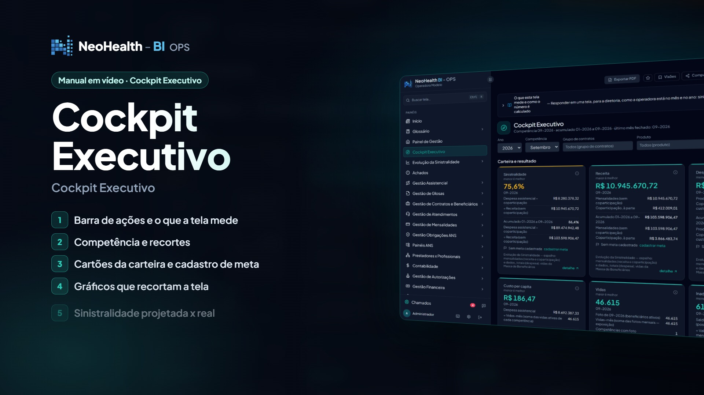
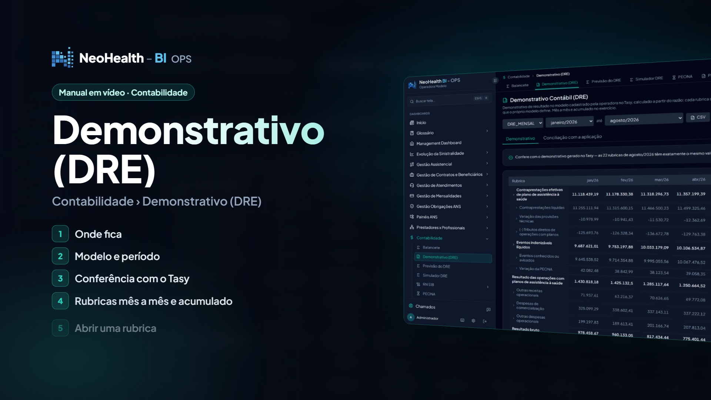
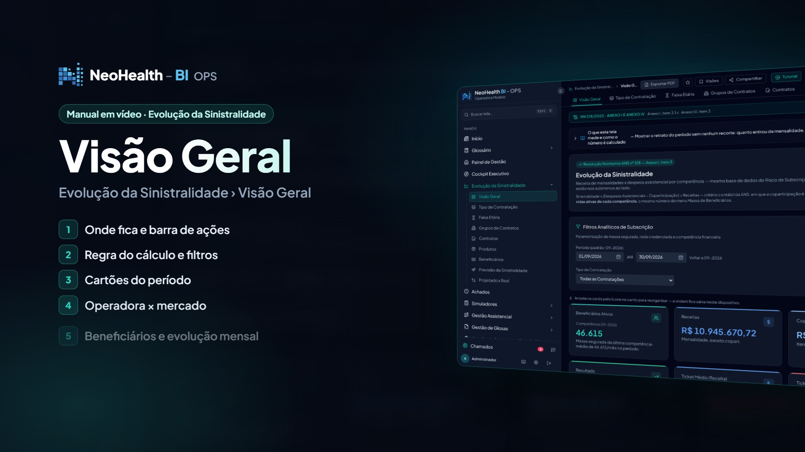
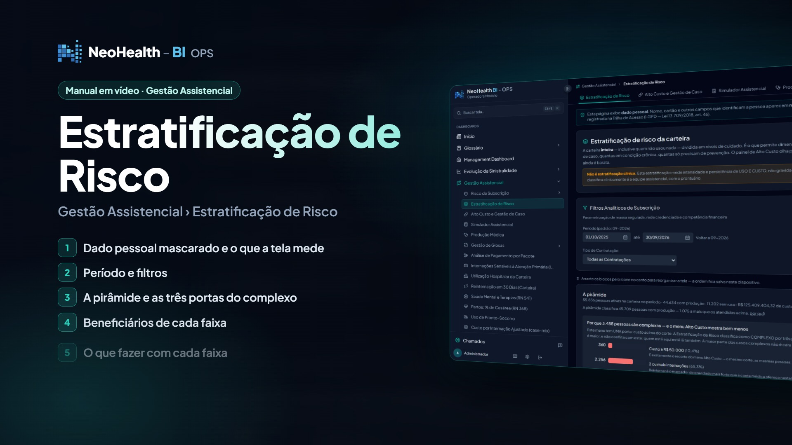
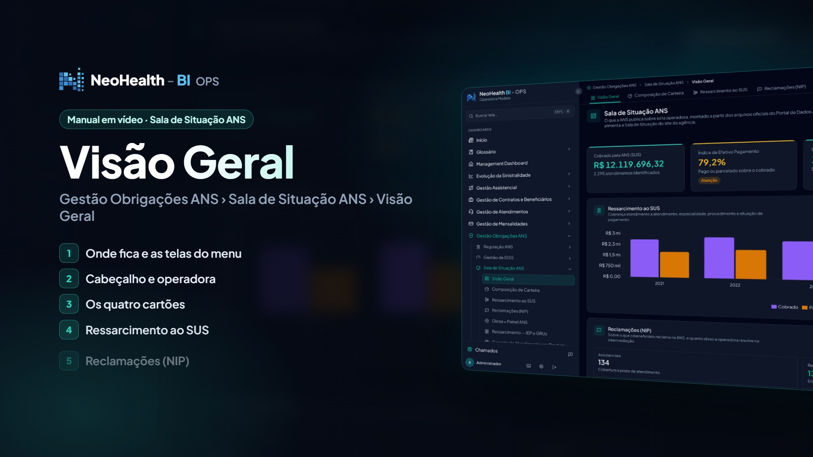
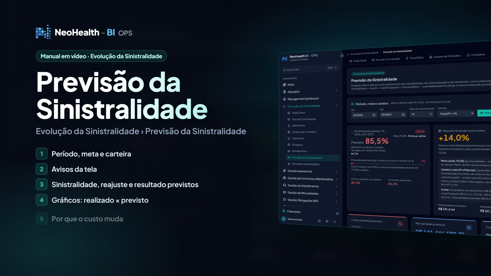

Cinco pilares para decidir com dados
Inteligência estratégica para operadoras de planos de saúde.

Imagem da plataforma com dados fictícios (base de demonstração)
1 · Financeira
Riscos e oportunidades financeiras
Sua operadora sabe exatamente onde estão os riscos financeiros e as oportunidades de melhoria?

Imagem da plataforma com dados fictícios (base de demonstração)
2 · Sinistralidade
Sem esperar o fechamento
Não espere o fechamento do mês para identificar os fatores que pressionam a sinistralidade.

Imagem da plataforma com dados fictícios (base de demonstração)
3 · Assistencial
Utilização e resultado
Entenda como a utilização dos serviços de saúde impacta os resultados da sua operadora.

Imagem da plataforma com dados fictícios (base de demonstração)
4 · Regulatória
Indicadores, obrigações e riscos
Mais visibilidade sobre indicadores, obrigações e riscos regulatórios.

Imagem da plataforma com dados fictícios (base de demonstração)
5 · Preditiva
Antecipar cenários
Vá além da análise histórica. Utilize seus dados para antecipar cenários e apoiar decisões.

Imagem da plataforma com dados fictícios (base de demonstração)
Transforme dados em decisões. Decisões em resultados.
Solicite uma demonstração.
Conheça o potencial dos dados da sua operadora.